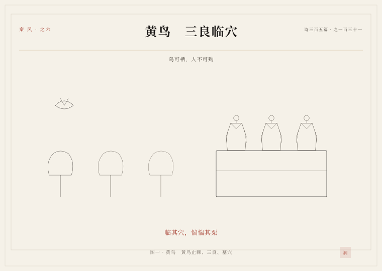
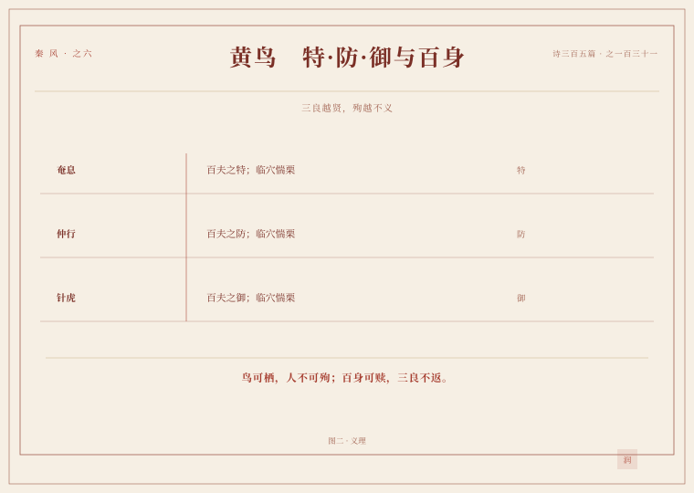

第一百三十一篇 黄鸟
秦风 · 之六 SJ131
朗读 · 普通话
依经文原文朗读，章次不读出；配古琴底乐，不改速、不加拖腔。全库同一音色（豆包 TTS），非播音员录制。
一 解题
诗三判：
- 谁在说：秦国国人，临圹哀三良而作。黄鸟止于棘、桑、楚，三章分举奄息、仲行、鍼虎，末以「人百其身」作赎。
- 说什么事：三章只换鸟所止、良人名、百夫之目。鸟有栖，人无归；一鸟一良，三章并列。
- 为何编在此：承《终南》受服之威仪，转见武功之极落为人殉；秦风之痛，自此不可掩。
《毛序》：“《黄鸟》，哀三良也。国人刺穆公以人从死，而作是诗也。”
朱子《诗集传》：“兴也。交交，飞而往来之貌。从穆公，从死也。子车，氏；奄息，名。特，杰出之称。穴，圹也。惴惴，惧貌；慄，惧。歼，尽。赎，贸也。○秦穆公卒，以子车氏之三子为殉，皆秦之良也，国人哀之，为之赋《黄鸟》，事见《春秋传》，即此诗也。言交交黄鸟则止于棘矣；谁从穆公，则子车奄息也。盖以所见起兴也。临穴而惴惴，盖生纳之圹中也。三子皆国之良，而一旦杀之；若可贸以他人，则人皆愿百其身以易之矣。”
本库的看法：《黄鸟》是一首临圹呼天的哀诗。
黄鸟止于棘桑楚，以鸟得其所兴人不得其所；三良之贤以百夫特、防、御见，三章哀一人，其痛一叠深一叠。末二句「如可赎兮，人百其身」，惜良之甚，亦是刺从死之酷。此篇与《小雅·黄鸟》「黄鸟黄鸟，无集于穀，无啄我粟」完全是两篇：彼思去此邦之穷、言旋言归复我邦族，此哀三良之殉；篇名同而事旨、章句皆异，图与解题不可混。断语：鸟可栖，人不可殉；百身愿赎，三良不返。
先辨五事：「黄鸟」是黄雀一类小鸟，不是黄鹂（仓庚）；「从死」是殉葬，不是跟随征战；「特、防、御」皆当百夫之意，不是特别、防备、防御；「穴」是冢圹，不是土坑；「赎」是贸代赎人，不是赎罪。
二 经文
第一章
交交黄鸟，止于棘。
谁从穆公？子车奄息。
维此奄息，百夫之特。
临其穴，惴惴其栗。
彼苍者天，歼我良人！
如可赎兮，人百其身！
第二章
交交黄鸟，止于桑。
谁从穆公？子车仲行。
维此仲行，百夫之防。
临其穴，惴惴其栗。
彼苍者天，歼我良人！
如可赎兮，人百其身！
第三章
交交黄鸟，止于楚。
谁从穆公？子车鍼虎。
维此鍼虎，百夫之御。
临其穴，惴惴其栗。
彼苍者天，歼我良人！
如可赎兮，人百其身！
分章：三章，章十二句。
三 韵读
- 一章：棘、息、特、栗，职部（入声）；人、身，真部。入声转真，痛声上扬。
- 二章：桑、行、防，阳部；人、身，真部。阳声宽，反衬穴冷。
- 三章：楚、虎、御，鱼部；人、身，真部。三章同收，赎声不改。
- 三章「临其穴，惴惴其栗」「彼苍者天，歼我良人」「如可赎兮，人百其身」重出，重句是同穴同哀，不是复沓凑韵。
读法：三章换木换名，穴与赎不改；改的是人，不改的是死。
四 字义与名物
- 交交：毛传「小貌」，朱传「飞而往来之貌」；从朱传，取往来翻飞之状。
- 黄鸟：黄雀一类小鸟。止：栖止。棘：酸枣；桑：桑；楚：荆条。
- 从穆公：从死，殉葬。笺「从死，自杀以从死」；朱传「临穴而惴惴，盖生纳之圹中也」。两说并存，诗中所写是被迫悼栗之惨，不写成从容就死。
- 子车：氏，《左传》作子舆。奄息：名；仲行：笺以为字；鍼虎：名，《左传》作针虎。
- 特：杰出之称。毛传「乃特百夫之德」，笺「百夫之中最雄俊」；从笺，谓一人特出于百夫。
- 防：毛传「比也」，笺「犹当也，一人当百夫」；从笺当比。
御：毛传「当也」；与防同义。
- 穴：冢圹。惴惴：惧貌。栗：惧；一作「慄」，古今字。
- 苍：苍天。歼：尽，尽杀。良人：善人、贤良之人。
- 赎：贸，赎代。人百其身：笺「如此奄息之死，可以他人赎之者，人皆百其身；谓一身百死犹为之，惜善人之甚」；从笺，是愿以百人之身赎一良，不是百人陪葬。
五 今译
黄鸟交交翻飞，停在酸枣树上。谁跟随穆公去死？子车奄息。这个奄息，是百夫中特出的人才。走近墓穴，人人惴惴战栗。那苍苍的天啊，尽杀我这善人！如果可以赎人，人人愿以百身相赎！
黄鸟交交翻飞，停在桑树上。谁跟随穆公去死？子车仲行。这个仲行，是百夫中可当的人才。走近墓穴，人人惴惴战栗。那苍苍的天啊，尽杀我这善人！如果可以赎人，人人愿以百身相赎！
黄鸟交交翻飞，停在荆条上。谁跟随穆公去死？子车鍼虎。这个鍼虎，是百夫中可当的人才。走近墓穴，人人惴惴战栗。那苍苍的天啊，尽杀我这善人！如果可以赎人，人人愿以百身相赎！
六 章旨
- 一章：止于棘，哀奄息；百夫之特，临穴惴栗。一木一良，起笔最直。
- 二章：止于桑，哀仲行；百夫之防，临穴惴栗。换木换名，不换穴与栗。
- 三章：止于楚，哀鍼虎；百夫之御，临穴惴栗。三良并列，末句同收。
- 总收：三良越贤，殉越不义；人百其身，越赎越空。
七 诗教
- 兴：以黄鸟止木起兴；鸟有栖，人入穴，一对比就冷。
- 观：观殉葬之酷，不在礼，在「临其穴」三字；礼到极处，反成杀。
- 群：国人与三良同声；一诗三章，是国人共哭，不是一人私哀。
- 怨：怨在「彼苍者天」；不直指穆公，呼天而诘，怨更深。
八 分寸与边界
- 不可把此篇与《小雅·黄鸟》混为一篇。彼序「刺宣王也」，「无集于穀，无啄我粟」，思去穷邦、言旋言归；此哀三良殉葬；同名黄鸟，事旨章句全异。
- 不可把黄鸟画成仓庚（黄鹂）。黄鸟是黄雀一类小鸟；图中只画剪影、背翼足，不画全形五官。
- 不可把「从穆公」解作跟随征战。从死即殉葬；一读成从行，全诗的冷就没了。
- 不可把三良写成自愿从死而无哀悯。诗中惴惴其栗、歼我良人，正见其被逼可悲；朱传已辨「自杀从死」之疑，不从从容就死说。
- 不可把「人百其身」解作百人陪葬。是愿以百人之身赎一良；一身百死犹为之，惜善人之甚。
- 不可在图中画圹中之人像或三良面目。诗中只临穴悼栗，圹中虚而不画。
九 存疑
- 从死之责：毛序刺穆公；朱传据临穴惴栗，疑康公从父乱命迫纳圹中；罪在穆公、康公还是沿袭戎狄殉俗，旧说有歧。
- 仲行：毛传为名，笺为字；或名或字，取韵而已。
- 鍼虎：《左传》作针虎；鍼、针字异。
- 栗／慄：经文一章三章作栗，二章一作慄；古今字。
- 黄鸟：毛传以「交交」为小貌，朱传为往来之貌；鸟名所指（黄雀还是黄鹂一类）旧说有别。
- 章节次第：安徽大学藏战国简《诗经》此篇章次与今本有异；此从毛诗。
十 跨典
- 《左传·文公六年》：“秦伯任好卒，以子车氏之三子奄息、仲行、针虎为殉，皆秦之良也。国人哀之，为之赋《黄鸟》。”——本事出处。
- 《史记·秦本纪》：穆公卒，葬于雍，从死者百七十七人，三良与焉。——殉葬之数与背景。
- 《诗经·小雅·黄鸟》：“黄鸟黄鸟，无集于穀，无啄我粟。……言旋言归，复我邦族。”——同名异篇，对辨不可混；彼为去国之思，此为殉葬之哀。
- 《诗经·秦风·无衣》（SJ133）：同卷；一哀良人之死，一与子同袍赴难，卷中情志相对。
- 《孟子·梁惠王上》：“仲尼曰：始作俑者，其无后乎！”——象人而用之犹讥；活人从死之酷，可通此义。
十一 双卡与图
六对：
| 黄鸟（黄雀小鸟） |
黄鸟（黄鹂仓庚） |
| 从死（殉葬） |
从死（跟随赴敌） |
| 特（杰出当百夫） |
特（特别） |
| 防（当百夫） |
防（防备） |
| 御（当百夫） |
御（防御） |
| 赎（贸代赎人） |
赎（赎罪） |

图一 · 黄鸟 三木止鸟、临圹悼良

图二 · 黄鸟 歼良呼天、百身愿赎
读图三处：
- 鸟与木：图一棘、桑、楚三枝分陈，黄鸟剪影各止一枝，只画背、翼、尾、足，不画眼。
- 穴：图一圹穴轮廓一线，旁立哀者虚位；不画圹中人，不画面目。
- 三良：图二三行奄息／仲行／鍼虎，下贯「人百其身」一愿；朱色收在「歼我良人」一诘。
断语：鸟可栖，人不可殉；百身可赎，三良不返。